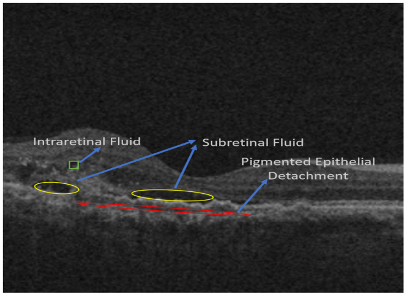
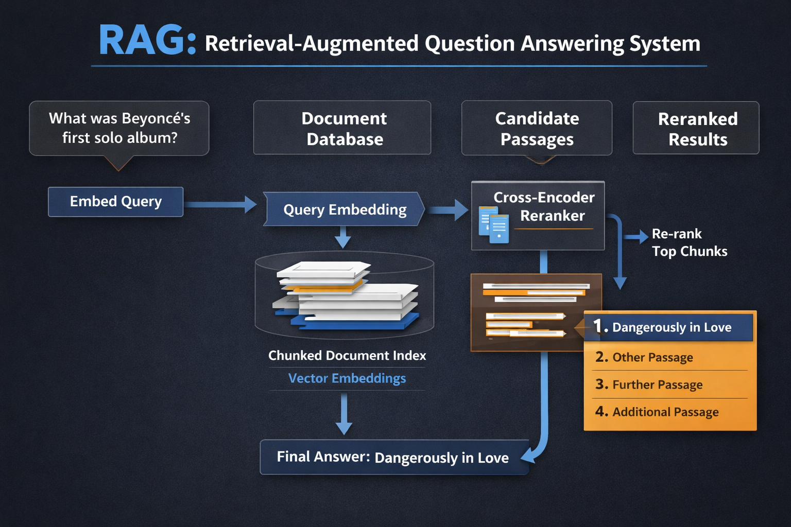

January, 2022
Visual Explanation for Abnormality Prediction in OCT Images
Research Scholar | IISc – Spectrum Lab (with Carl Zeiss)
Designed CNN-based medical imaging pipelines with advanced denoising
Applied Grad-CAM, Score-CAM, Ablation-CAM for explainable AI
Publications and presentations at NeurIPS Workshops and MDPI Journals
Research focused on XAI, medical image analysis, and robustness
Publication Details

This work presents a deep-learning-based framework for visualizing and estimating retinal fluid volumes in OCT scans across IRF, SRF, and PED pathologies.
Using Inception-ResNet-based models and a robust Ensemble-CAM visualization approach, the method enables interpretable localization and accurate volumetric analysis validated against expert annotations.

Built an end-to-end Retrieval-Augmented Generation (RAG) pipeline for document-grounded question answering using SQuAD v2 as a benchmark.
Designed a structure-aware chunking strategy with controlled overlap, indexed document chunks in Chroma using MiniLM bi-encoder embeddings, and evaluated retrieval quality using Recall@K based on gold answer spans.
Enhanced precision by introducing a cross-encoder reranker to re-score candidate passages, significantly improving fact-level retrieval accuracy.
The system mirrors industry-standard search pipelines by separating fast candidate recall from high-precision relevance ranking.